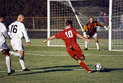
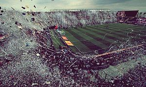
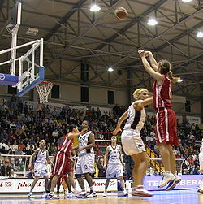
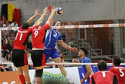
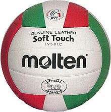
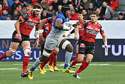
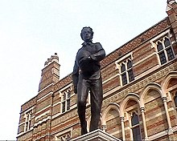
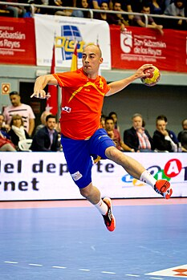
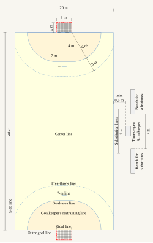

ინფორმაცია ყველა ამ სპორტზე
- ფეხბურთი
- კალათბურთი
- ფრენბურთი
- რაგბი
- ხელბურთი
ფეხბურთი
ფეხბურთი — გუნდური სპორტი, რომელშიც თერთმეტი წევრისგან შემდგარი ორი გუნდი ეთამაშება ერთმანეთს. თამაში მიმდინარეობს მართკუთხა მინდორზე საგოლე კარით ორივე ბოლოში. თამაშის მიზანი გუნდის წევრებს შორის ბურთით მანევრირებაა მოწინააღმდეგე გუნდის კარში გოლის გასატანად. ამ სპორტის მთავარი დამახასიათებელი წესის მიხედვით, მოთამაშეებს, მეკარის გარდა, ბურთზე ხელის ან მკლავის გამოყენების უფლება არ აქვთ თამაშის პერიოდში. მატჩის გამარჯვებული ის გუნდია, რომელიც უფრო მეტ გოლს გაიტანს თამაშის ბოლომდე. ფეხბურთში არის ერთი მთავარი და ოთხი დამხმარე მსაჯი, აქედან 2 გვერდითი არბიტრი, 2 პირითი ხაზის დამხმარე მსაჯი. მთავარ მსაჯს აქვს უფლება მიიღოს გადაწყვეტილება – დააჯარიმოს თუ არა გუნდი კონკრეტულ ეპიზოდში თამაშის წესების დარღვევისთვის. მსაჯს შეუძლია ფეხბურთელს უჩვენოს ყვითელი ან წითელი ბარათი. ეს იმაზეა დამოკიდებული თუ რამდენად უხეშად ითამაშა ფეხბურთელმა. მსაჯის მიერ ყვითელი ბარათის ორჯერ ან პირდაპირ წითელი ბარათის ჩვენების შემთხვევაში ფეხბურთელი ტოვებს მინდორს და ავტომატურად ტოვებს მისი გუნდის მომდევნო შეხვედრასაც იმ კონკრეტულ ტურნირზე, სადაც მიიღო წითელი ბარათი. იმ შემთხვევაში თუ წითელი ბარათი ფეხბურთელმა არასპორტული საქციელის გამო მიიღო, შესაძლოა მას რამდენიმე თამაშის გამოტოვებაც მოუწიოს (მისი საკითხი განიხილება უეფას ან ფიფას სადისციპლინო კომიტეტზე). თამაში თანამედროვე სახით ჩამოყალიბდა ინგლისში, რასაც ფეხბურთის ასოციაციის შექმნა მოჰყვა, რომლის 1863 წელს შედგენილმა კანონებმა განაპირობა სპორტის განვითარება ისე, როგორც მას ამჟამად თამაშობენ. ფეხბურთის საერთაშორისო მმართველი ორგანიზაციაა ფიფა (ფრანგ. Fédération Internationale de Football Association; აკრონიმი - FIFA). ყველაზე პრესტიჟული საფეხბურთო შეჯიბრია ფიფა-ს მსოფლიო ჩემპიონატი, რომელსაც ყველაზე მეტი მაყურებელი ჰყავს მსოფლიოში სპორტულ ღონისძიებებს შორის.


კალათბურთი
კალათბურთი — გუნდური სპორტის სახეობა, რომელშიც ორი გუნდი, თითოეულში ხუთი მოთამაშით ცდილობს ქულები მოაგროვოს მოწინააღმდეგის კალათში ბურთის მოხვედრით ორგანიზებული წესების მიხედვით.
ისტორია
1891 წელს სპრინგფილდის (მასაჩუსეტსი, აშშ) კოლეჯის ანატომიის მასწავლებელმა ჯეიმზ ნეისმიტმა დაამუშავა პირველი წესები და 1891 წლის დეკემბერს პირველი მატჩიც მოაწყო. მალე ახალი თამაში მთელმა ამერიკამ აღიარა, მოგვიანებით კი დანარჩენმა მსოფლიომაც გაიცნო.
მოედანი, ბურთი, წესები
კალათბურთის ბურთი
კალათბურთის სათამაშოდ იყენებენ მოედანს, რომლის ზომაა 28X15 მ. პირითი ხაზების შუა ადგილას სპეციალურ დგარებში დაყენებულია ფარები, რომლებზეც დამაგრებულია ლითონის რგოლებზე დაკიდებული უძირო ბადეები (კალათები). მანძილი იატაკსა და კალათს შორის 305 სმ-ია, თვითონ ფარის ზომებია 180X105 სმ ან 120X80 სმ, ასევე არსებობს ქუჩის კალათბურთის ფარი და სამოყვარულო კალათბურთის ფარი, რომლის ზომებიც განსხვავებულია. კალათის დიამეტრი 45 სმ-ია. ფარის წინ 625-ანი რადიუსით შემოსაზღვრულია 3-ქულიანი ტყორცნის არე და საჯარიმო ზონა. კალათბურთს თამაშობენ ტყავის, სინთეტიკური ტყავის ან სხვა სინთეტიკური მასალისაგან დამზადებული ბურთით. რომლის გარშემოწირულობა 74,5-78 სმ-ა, ხოლო მასა — 567-650 გრამი.
მოთამაშეთა რაოდენობა ყოველ გუნდში 5-5 კაცით განისაზღვრება. თამაშის დროს ჩაგდებული ბურთისათვის გუნდს ერიცხება 2 ან 3 ქულა, ყოველი რეალიზებული საჯარიმო ტყორცნისათვის 1 ქულა, გამარჯვებულია ის გუნდი, რომელიც მეტ ქულას დააგროვებს. შეხვედრა შედგება ოთხი 10-წუთიანი (სუფთა დრო) მეოთხედისგან. მეოთხედებს შორის შესვენება 2 წუთია. გამონაკლისია შესვენება მეორე და მესამე მეოთხედებს შორის, რომელიც 15 წუთი გრძელდება. მატჩის ფრედ დამთვრების შემთხვევაში ინიშნება დამატებითი 5-წუთიანი ტაიმი (ან ტაიმები), გამარჯვებულის გამოვლენამდე. დაშვებულია ნებისმიერი რაოდენობის შეცვლები. ყველა შეცვლილ მოთამაშეს უფლება აქვს დაბრუნდეს მოედანზე.
კალათბურთს ხელით თამაშობენ. დაშვებულია ბურთის ხელით ტარება, გადაცემა და ტყორცნა, როგორც ცალი, ასევე ორი ხელით. არ შეიძლება ორ ნაბიჯზე მეტის გადადგმა ბურთის დაუგდებლად, ბურთიანად ახტომა და დახტომა, მეტოქის საჯარიმო ზონაში სამ წამზე მეტხანს ყოფნა. გუნდს ბურთის მეტოქის ნახევარზე გადატანისათვის ეძლევა 8, ხოლო შეტევისათვის სულ — 24 წამი, რომლის გასვლის შემდეგ ბურთი მეტოქეს გადაეცემა. მწვრთნელს უფლება აქვს თითოეულ ტაიმში აიღოს ერთი წუთშესვენება (მეოთხეში — ორი). მოთამაშე ჯარიმდება ყველა ამ წესის დარღვევისათვის, აგრეთვე ბლოკირებისათვის და უხეში თამაშისათვის. მოთამაშე ჯარიმდება როგორც ჩვეულებრივი ჯარიმით, ასევე პერსონალური შენიშვნით. 5 პერსონალური შენიშვნის მიღების შემთხვევაში მოთამაშე ტოვებს მოედანს. ოთხი გუნდური შენიშვნის შემდეგ ყოველი ჯარიმა სრულდება საჯარიმო ტყორცნებით. ჩაგდებული საჯარიმო იძლევა 1 ქულას. თამაშის მსვლელობისას 2-ქულიან ზონიდან ჩაგდებული ბურთი ფასდება 2, ხოლო 3-ქულიანი ზონიდან ჩაგდებული - სამ ქულად.
საერთაშორისო ფედერაცია
მთავარი სტატია: კალათბურთის საერთაშორისო ფედერაცია.
კალათბურთის საერთაშორისო ფედერაცია (Federation Internationale de Basketball - FIBA) დაარსდა 1932 წლის ივნისს ქალაქ ჟენევაში. დამფუძნებელი ქვეყნები იყვნენ: არგენტინა, იტალია, ლატვია, პორტუგალია, რუმინეთი, საბერძნეთი, შვეიცარია და ჩეხოსლოვაკია. ამჟამად იგი აერთიანებს 212 ქვეყანას და 5 ზონალურ (კონტინენტალურ) კომისიას.
მნიშვნელოვანი ტურნირები
კალათბურთში, ისევე როგორც სპორტის ბევრ სხვა სახეობაში უმთავრესი ტურნირია ოლიმპიური თამაშების პროგრამით გათვალისწინებული კალათბურთელთა ტურნირი, რომელსაც კალათბურთის საერთაშორისო ფედერაცია საერთაშორისო ოლიმპიურ კომიტეტთან ერთად ატარებს. ასევე უმნიშვნელოვანესი ტურნირია მსოფლიოს ჩემპიონატი ვაჟთა და ქალთა შორის.
გარდა ამისა ზონალური (კონტინენტალური) კომისიები ატარებენ თავიანთი კონტინენტების ჩემპიონატებს და საკლუბო ტურნირებს.
მეტად პოპულარულია ტურნირი, რომელსაც ატარებს ნაციონალური საკალათბურთო ასოციაცია — NBA, რომელიც საკლუბო დონეზე იმართება ამერიკულ და კანადურ კლუბებს შორის.


ფრენბუთი
ფრენბურთი — სპორტის გუნდური სახეობა, რომელშიც ორი გუნდი (თითოეულში ექვსი მოთამაშით) ცდილობს ქულები მოაგროვოს მოწინააღმდეგის მოედანში ბურთის ჩაგდებით.
ისტორია
ფრენბურთის „საპასპორტო“ მონაცემები ცნობილია: თამაში 1895 წელს მოიგონა ამერიკული ქალაქის ჰოლიოკის მკვიდრმა, ფიზიკური აღზრდის მასწავლებელმა უილიამ მორგანმა. მან ახალ თამაშს „მინონეტი“ უწოდა. 1896 წელს ეს თამაში ქალაქ სპრიფგფილდში წარადგინეს ახალგაზრდა ქრისტიანთა ასოციაციის კონფერენციაზე. აქ პროფესორ ალფრედ ჰალსტედის ინიციატივით თამაშს ფრენბუთი (volley - მფრინავი) უწოდეს და ეს სახელი თამაშს დღემდე შემორჩა. ნელ-ნელა ახალი თამაში სხვა ამერიკულ ქალაქებშიც გავრცელდა. მალე კი კანადაში და ლათინურ ამერიკაშიც. 1990 წელს ფირმა „სპოლდინგმა“ დაამზადა ფრენბურთის სათამაშო პირველი ბურთი. იმავე წელს დაიწერა ფრენბურთის თამაშის პირველი ოფიციალური წესები.
პირველი მსოფლიო ომის დროს ამერიკის საექსპედიციო ჯარების ჯარისკაცებმა ფრენბურთი ევროპასაც გააცნეს. თამაშმა მალე პოპულარობა მოიპოვა და სწრაფად გავრცელდა მთელს ევროპაში. 1922 წელს ბრუკლინში პირველი ამერიკული შეჯიბრებაც გაიმართა ფრენბურთში. იმავე წელს შეიქმნა ჩეხოსლოვაკიის ფრენბურთის (და ხელბურთის) ფედერაცია. 20-იან წლებში ასეთივე ფედერაციები შეიქმნა სსრ კავშირში, ბულგარეთში, აშშ-ში, იაპონიაში და სხვაგან.
მოედანი, ბურთი, წესები
ფრენბურთის ბურთი
ფრენბურთს თამაშობენ 18X9 მ ზომების მოედანზე, რომლის შუაში 243 სმ (იატაკიდან ბადის ზედა კიდემდე) სიმაღლეზე აღმართულია 1მ სიგანის ბადე (ქალებისთის 224 სმ). გუნდში ექვსი მოთამაშეა (მათ შორის ერთი ლიბეროა, რომელსაც სხვა ფერის ფორმა აცვია). გუნდებს თითოეულ პარტიაში ექვსი შეცვლის უფლება აქვთ. ბურთის მოწოდებისას მოთამაშეებს გარკვეული პოზიციები უკავიათ და მისი დარღვევა ისჯება. ბურთის მოწოდების მოპოვების შემთხვევაში მოთამაშეები საათის ისრის მიმართულებით გადაადგილდებიან. ბურთს ყოველთვის აწოდებს მოთმაშე, რომელსაც ამ დროს მარჯვენა კუთხეში მოუწევს დგომა. ქულა მოპოვებულად ითვლება თუ ის მეტოქის ნახევარში იატაკს შეეხო ან მეტოქის ხელიდან დატოვა მოედანი (ბურთი თამაშიდან გასულად ითვლება თუ მოედნის გარეთ ან იატაკს ან რაიმე სხვა საგანს შეეხო). მატჩი ფრენბურთში სამი პარტიის მოგებამდე გრძელდება. თითოეული პარტია კი 25 ქულამდე (მეხუთე პარტია - 15 ქულამდე). ამავე დროს აუცილებელია მინიმუმ ორქულიანი სხვაობა (ანუ 25-24-ზე თამაში არ მთვარდება და გრძელდება ორქულიანი უპირატესობის მოპოვებამდე). ყოველი პარტიის შემდეგ მეტოქეები მოედნის ნახევრებს ცვლიან. აკრძლულია ბადის მეორე ნახევარში ხელის გადაყოფა, მეტოქესთან ან მოედნის მეორე ნახევართან კონტაქტი, ბადის ვერტიკალური სიბრტყის გადაკვეთა. გუნდებს უფლება აქვთ თითოეულ პარტიაში აიღონ ორი 30 წამიანი წუთშესვენება. გუნდს უფლება აქვს მოწოდებულ ბურთს შეეხოს მხოლოდ სამჯერ, ამასთან მესამე შეხებით ბურთი აუცილებლად მეტოქის ნახევრისკენ უნდა გაიგზავნოს. სათამაშო ბურთი ტყავისგან მზადდება. გარშემოწერილობა 65-67 სმ-ა, ხოლო წონა - 260-280 გრ.
საერთაშორისო ფედერაცია
პირველი მსოფლიო ომის შემდგომ ფრენბურთმა სწრაფი პოპულარობა განიცადა. 1936 წელს ხელბურთის საერთაშორისო ფედერაციის სტოკჰოლმის კონგრესზე პოლონეთის დელეგაციამ დააყენა წინადადება შეექმნათ ფრენბურთის კომისია, როგორც ფედერაციის შემადგენელი ორგანო. კონგრესმა ეს წინადადება მიიღო და შეიქმნა კომისია, რომლის შემადგენლობაში 22 ქვეყნის წარმომადგენელი შევიდა.
მეორე მსოფლიო ომის შემდეგ, 1947 წლის 18 - 20 აპრილს პარიზში გაიმართა ფრენბურთის საერთაშორისო ფედერაციის (Federation Internationale de Volleyball - FIVB) დამფუძნებელი კონგრესი. დამფუძნებელი ქვეყნები იყვნენ: ბრაზილია, უნგრეთი, ეგვიპტე, იტალია, ნიდერლანდები, პოლონეთი, პორტუგალია, რუმინეთი, აშშ, ურუგვაი, საფრანგეთი, ჩეხოსლოვაკია და იუგოსლავია.
ფედერაციის შტაბ-ბინა მდებარეობს ლოზანაში. ამჟამინდელი პრეზიდენტია ვეი ცზიჩუნი (ჩინეთი).
ამჟამად იგი აერთიანებს 218 ქვეყანას და 5 კონტინენტალურ კონფედერაციას.
მნიშვნელოვანი ტურნირები
ფრენბურთში, ისევე როგორც სპორტის ბევრ სხვა სახეობაში უმთავრესი ტურნირია ოლიმპიური თამაშების პროგრამით გათვალისწინებული ფრენბურთელთა ტურნირი, რომელსაც ფრენბურთის საერთაშორისო ფედერაცია საერთაშორისო ოლიმპიურ კომიტეტთან ერთად ატარებს.
უმნიშვნელოვანესი ტურნირია მსოფლიოს ჩემპიონატი ვაჟთა და ქალთა შორის.
გარდა მსოფლიოს ჩემპიონატისა ფედერაცია ატარებს:
მსოფლიოს თასი ვაჟთა და ქალთა შორის
მსოფლიოს ლიგა ვაჟთა და ქალთა შორის
ჩემპიონთა თასი ვაჟთა და ქალთა შორის
მსოფლიოს დიდი პრიზი ქალთა შორის
გარდა ამისა კონტინენტალური ფედერაციები ატარებენ თავიანთი კონტინენტების ჩემპიონატებს და საკლუბო ტურნირებს.


რაგბი
რაგბი — სპორტული გუნდური თამაშის სახეობა ოვალური ბურთით, რომელსაც ორივე გუნდის თითოეული მოთამაშე ერთმანეთისთვის ხელით და ფეხით ბურთის გადაცემით ცდილობს დაამიწოს იგი ლელოში, მოწინააღმდეგის კარს მიღმა ან გაიტანოს იგი H-ის ფორმის კარში.
ისტორია
უილიამ უებ ელისის ქანდაკება თავისი სკოლის წინ ქალაქ რაგბიში
არსებობს გადმოცემა, რომ რაგბის თამაში დაიბადა 1823 წლის 7 აპრილს. ამ დღეს ინგლისის ქალაქ რაგბიში (ინგ. Rugby აქედან მოდის თამაშის სახელწოდებაც) 16 წლის მოსწავლემ უილიამ უებ ელისმა ფეხბურთის თამაშის დროს ხელი დასტაცა ბურთს და მეტოქის კარისაკენ გაიქცა. დღეისათვის ეს ვერსია, მართალია, ოფიციალურად უარყოფილია, მაგრამ რაგბიში მთავარ ჯილდოს, მსოფლიოს თასს, მაინც ელისის სახელი ჰქვია. სინამდვილეში, მაშინ ფეხბურთის თამაში ფეხითაც შეიძლებოდა და ხელითაც. 1845 წელს რაგბის სკოლის მოსწავლეებმა დაწერეს წესები, რომელმაც სათავე დაუდო ახალ თამაშს - Rugby-football-ს. 1863 წლამდე, სანამ ინგლისში ფეხბურთის ასოციაცია ჩამოყალიბდებოდა, გუნდები თამაშის წინ თანხმდებოდნენ თუ რომელი წესებით ეთამაშათ. განსხვავება ის იყო, რომ რაგბიში ბურთის ხელში დაჭერა და გაქცევა შეიძლებოდა, ფეხბურთში კი - მხოლოდ დაჭერა. 1869 წელს ფეხბურთში საბოლოოდ აიკრძალა ხელით თამაში და ხელით თამაშის მიმდევრებმა 1871 წელს დააარსეს ინგლისის რაგბის კავშირი, რომელმაც 21 კლუბი გააერთიანა. იმავე წელს გამოიცა თამაშის პირველი ოფიციალური წესები და გაიმართა პირველი საერთაშორისო მატჩიც: ინგლისი - შოტლანდია. ახალმა თამაშმა მალე მოიკიდა ფეხი ბრიტანეთის კუნძულებზე. ზედიზედ შეიქმნა შოტლანდიის (1873 წელს), ირლანდიის (1875) და უელსის (1881) რაგბის კავშირები.
ბრიტანელებმა მალე ეს თამაში მსოფლიოსაც გააცნეს. რაგბის კავშირები შეიქმნა სამხრეთ აფრიკის რესპუბლიკაში (1889 წელს), ახალ ზელანდიაში (1892), არგენტინაში (1899), გერმანიაში (1990) და სხვა.
1886 წელს ირლანდიის, უელსის და შოტლანდიის წარმომადგენლებმა დააარსეს რაგბის საერთაშორისო საბჭო (International Rugby-football Board) - ირფბ-ი. ორგანიზაციას 1890 წელს შეუერთდა ინგლისი. 1949 წელს სამხრეთ აფრიკის რესპუბლიკა, ავსტრალია და ახალი ზელანდია. მხოლოდ 1976 წელს მიიღეს ორგანიზაციაში ფრანგები. საერთოდ ირბ-ი მეტად კონსერვატული ორგანიზაცია აღმოჩნდა და ფრანგებმა მის ალტერნატივად 1934 წელს სამოყვარულო რაგბის საერთაშორისო ფედერაცია-ევროპული რაგბის ასოციაცია - ფირა, შექმნეს.
XX საუკუნის დასაწყისში (1900, 1908, 1924 და 1928 წლებში) რაგბი ოლიმპიური თამაშების პროგრამაშიც შედიოდა, მაგრამ მერე და მერე ირბ-ი მხოლოდ ხუთი ერის პირველობით და ტესტ-მატჩებით შემოიფარგლა. XX საუკუნის ბოლო მეოთხედში რაგბის საერთო განვითარებამ აიძულა ირბ-ი კარი გაეღო დანარჩენი მსოფლიოსათვის და დაეწყო მსოფლიოს ჩემპიონატების ჩატარება. 1997 წელს საბჭოს სახელწოდებიდან ამოიღეს სიტყვა „football“ და საბჭომ მიიღო დღევანდელი სახელწოდება.
თამაში
თამაშის მიზანი
თამაშის მიზანი არის ორმა, 15-კაციანმა გუნდმა, სპორტულ შეჯიბრებაში და წესების დაცვით, ბურთის წაღებით, გადაწოდებით, დარტყმითა და დამიწებით მოაგროვოს შეძლებისდაგვარად მეტი ქულა. გუნდი, რომელმაც მეტოქეზე მეტი ქულა მოაგროვა, ითვლება გამარჯვებულად.
ქულები
ქულების დაგროვება ხდება ლელოს გატანით ან დარტყმის ზუსტად შესრულებით. ლელოს გატანა ეწოდება მოთამაშის შესვლას მოწინააღმდეგე გუნდის ჩათვლის მოედანზე და ბურთის მიწაზე დადებას (დამიწებას). ლელოს გამტანი გუნდი იღებს 5 ქულას.
დარტყმა ითვლება გატანილად, თუკი ბურთი გაფრინდება მოწინააღმდეგის კარის ძელებს შორის, ხარიხის თავზე. არსებობს სამი სახის დარტყმა, რომელიც ქულებით ფასდება:
არეკნი - თამაშის დროს ბურთის დარტყმა. ფასდება 3 ქულით.
ჯარიმა - ინიშნება მაშინ, როდესაც გუნდი დაარღვევს თამაშის წესებს. ფასდება 3 ქულით.
გარდასახვა - ინიშნება ლელოს გატანის შემდეგ და ირტყმება ლელოს გატანის ხაზის გასწვრივ, ნებისმიერი მანძილიდან. ფასდება 2 ქულით.
სათამაშო პოზიციები
მოედანზე რაგბის გუნდი 15 კაცისაგან შედგება. აქედან 8 ფორვარდია (პოზიციები 1-დან 8-მდე), 7 კი ბეკი ანუ უკანახაზელი (9-15). გუნდს უფლება აქვს, მოახდინოს 7 შეცვლა. შესაბამისად, გუნდში 7 სათადარიგო მოთამაშეცაა. განსაკუთრებული შემთხვევაა სისხლის წამოსვლა, რომლის დროსაც დაშავებული ვალდებულია, დაუყოვნებლივ დასტოვოს მოედანი და დაბრუნდეს მოედანზე დახმარების აღმოჩენის შემდეგ, 15 წუთის განმავლობაში. ამ დროს ეს მოთამაშე შეიძლება დროებით შეიცვალოს სამარქაფოთი. თუკი დაშავებული 15 წუთის განმავლობაში უკან დაბრუნდება და სამარქაფოს ჩაენაცვლება, მაშინ შეცვლა არ ჩაითვლება შესრულებულად.
ფორვარდები მონაწილეობენ დერეფნებსა და შერკინებებში.სათამაშო ეპიზოდები და ტაქტიკური ხერხები
წინ თამაში
წინ თამაში რაგბის წესების დარღვევის ერთ-ერთი ყველაზე გავრცელებული ნაირსახეობაა. მორაგბე ვალდებულია, ხელით თამაშის დროს ბურთი უკან (და არა წინ) მყოფ თანაგუნდელს გადააწოდოს. შესაბამისად, წინ გადაწოდება დარღვევაა. ბურთის ხელში დაჭერისას მისი წინ გადავარდნაც წინ თამაშად ითვლება და ზუსტად ისევე ისჯება, როგორც წინ გადაწოდება - შერკინებით, მოწინააღმდეგე გუნდის სასარგებლოდ.
შებოჭვა
შებოჭვა არის ერთ-ერთი ხერხი რომლის საშუალებითაც გუნდს შეუძლია თავდასხმის შეჩერება. ამ დროს დამხვდური გუნდის მოთამაშე იჭერს მომხდურთა ბურთიან მორაგბეს და აგდებს მას მინდორზე.
რაქი
რაქი იქმნება იმ შემთხვევაში, როდესაც ბურთი მიწაზე აღმოჩნდება და მის გარშემო ფეხზე მდგარი მეტოქეები ერთმანეთს ებრძვიან მის დასაუფლებლად, ცდილობენ არ მიუშვან ბურთთან მეტოქე და ფეხით მიიგორონ იგი თავისკენ. რაქი, როგორც წესი, შებოჭვების შემდეგ იქმნება, მაგრამ მისი წარმოქმნა შეიძლება მოხდეს ნებისმიერ სხვა სათამაშო ეპიზოდშიც, როდესაც კი ბურთი მიწას შეეხება. აკრძალულია რაქში გვერდიდან ჩართვა და ბურთზე ხელით თამაშიც (თუმცა, თანამედროვე რაგბიში, მოთამაშეს შეუძლია, იდაყვებით გააჩეროს ბურთი და ამით ჰავბეკს მისი გამოტანა გაუადვილოს). თუკი ბურთი რაქიდან დადგენილ დროში არ იქნა გამოტანილი, ინიშნება შერკინება იმ გუნდის სასარგებლოდ, რომელიც რაქში უპირატესობას ფლობდა.
მოლი
მოლი იქმნება მაშინ, როდესაც ბურთიან მოთამაშეს ეჭიდება მეტოქე გუნდის ერთი ან მეტი მოთამაშე და ამავე დროს ეხმარება ერთი, ან მეტი თანაგუნდელი.
თამაშგარეს ხაზი გადის მოლის განაპირა მონაწილეთა გარე ფეხის გასწვრივ. უროში შესვლა დაშვებულია მხოლოდ უკნიდან. მოლში დაშვებულია ხელით თამაში. მოლის განგებ ჩაქცევა ისჯება ჯარიმით (შენიშნვა: 2008 წლის 1 აგვისტოდან, ირბ-ს წესებით დაშვებულია მოლის ჩაქცევა, თუკი იგი მოხერხდა მეტოქეზე წელს ზემოთ იერიშის შედეგად) თუ ბურთი დროულად არ გამოვიდა მოლიდან, ინიშნება შერკინება მისი ამგორებელი გუნდის საწინააღმდეგოდ.
შერკინება
შერკინება ინიშნება მაშინ, როდესაც თამაში უნდა გაგრძელდეს წესების დარღვევის შემდეგ. თითოეული გუნდიდან შერკინებაში მონაწილეობენ ფორვარდები, რომლებიც სამ ხაზად არიან განლაგებული. პირველი ხაზის შუაში დგება კვაჭი (ნომერი 2), რომლის მარცხნივ და მარჯვნივ დგებიან ბურჯები (მარცხნივ 1, მარჯვნივ 3). ისინი მჭიდროდ ეკვრებიან ერთმანეთს. მათ უკან დგებიან მეორეხაზელები, რომელთა თავები კვაჭისა და ბურჯების სხეულებს შორის არის მოქცეული და ისინი მთელი სხეულით აწვებიან წინ. მათ უკან კი დგებიან მესამეხაზელები.
ორი გუნდის ფორვარდები დგებიან ერთმანეთის პირისპირ ერთი ხელის გაწვდენაზე. პირველი ხაზი იხრება მოედნის პარალელურად და მსაჯის ბრძანების შემდეგ ეჯახება და აწვება ერთმანეთს. ამ დროს იმ გუნდის მოთამაშე (როგორც წესი, 9 ნომერი), რომლის სასარგებლოდაცაა დანიშნული შერკინება, ბურთს აგდებს შერკინების შუაში. ორივე გუნდი ერთმანეთს აწვება და ორივე კვაჭი (ზოგჯერ ბურჯებიც) ცდილობს, ფეხით გადააგოროს ბურთი თავისი გუნდის მხარეს. ამის შემდეგ გუნდმა, რომელიც უპირატესობას მოიპოვებს, შეიძლება ბურთი ან მაშინვე გამოიტანოს შერკინებიდან და წამოიწყოს შეტევა, ანდა (თუკი ეს შესაძლებელია) მოწინააღმდეგეს ჯერ რამდენიმე მეტრით დაახევინოს უკან და შემდეგ შეუტიოს. როგორც წესი, გუნდი იგებს საკუთარ შერკინებებს.
შერკინება რაგბის მატჩის ერთ-ერთი მნიშვნელოვანი და ამავე დროს სახიფათო (ტრავმების თვალსაზრისით) კომპონენტია, რადგან მოთამაშეებზე, განსაკუთრებით პირველხაზელებზე, ძალიან დიდი ზეწოლა მიდის. როგორც წესი, თანამედროვე პროფესიონალურ თამაშებში თითოეული გუნდის მორაგბეთა საერთო მასა შერკინებისას 800 კილოგრამს აღემატება. ამიტომ არსებობს მრავალი წესი, რომელიც არეგულირებს შერკინებას და უმრავლესობა სწორედ უსაფრთხოების ნორმებიდან გამომდინარეობს.
დერეფანი
როდესაც ერთი გუნდის მოთამაშე გადააგდებს ბურთს მოედნის გვერდით ხაზს იქით, ინიშნება დერეფანი მეორე გუნდის სასარგებლოდ. ამ წესიდან გამონაკლისია ის შემთხვევა, როდესაც ბურთი გადადის საჯარიმო დარტყმიდან. ამ დროს დერეფანი იმ გუნდის სასარგებლოდ ინიშნება, რომელიც ჯარიმას ურტყამდა. ამ მარტივი ხერხის გამოყენებით საჯარიმოს დამრტყმელ გუნდს შეუძლია საკმაო მანძილი მოიგოს და წინ წაიწიოს მოწინააღმდეგის ჩათვლის მოედნისაკენ.
დერეფანი ინიშნება იმ ადგილას, სადაც ბურთი გვერდით ხაზს გადაკვეთს. როგორც წესი, ორივე გუნდის 7 ფორვარდი დგება მოწოდების წერტილიდან, საკუთარი მოედნის მხარეს, ერთ ხაზში - გვერდითი ხაზის მართობულად. მომწოდებელი გუნდის მერვე ფორვარდი (როგორც წესი, ამ როლს ასრულებს კვაჭი, 2 ნომერი) ბურთს აგდებს ზუსტად რიგებს შორის. თითოეული გუნდიდან ერთი ან რამდენიმე მოთამაშე ზემოთ ხტება და ცდილობს რომ მოწოდებული ბურთი დაიჭიროს. როგორც წესი, მხტომელთა ფუნქციებს მეორეხაზელები (4 და 5 ნომრები) ასრულებენ. დანარჩენები კი მათ ახტომაში ეხმარებიან.
თუკი ზემოთ ამხტარი მოთამაშე იჭერს ბურთს, მას შეუძლია დაიჭიროს ის და შეუტიოს მიწაზე დაშვებისას, ან გადააწოდოს თანაგუნდელებს. ყველა ის მოთამაშე, რომელიც დერეფანში არ მონაწილეობს, დერეფნიდან 10 მეტრით მაინც უნდა იყოს დაშორებული.
დრო
მატჩის ხანგრძლივობა
მატჩი გრძელდება არაუმეტეს 80 წუთს. ამას შეიძლება მიემატოს გაცდენილი და დამატებითი დრო. მატჩი იყოფა ორ ტაიმად (ნახევრად). თითო ტაიმის ხანგრძლივობა არაუმეტეს 40 წუთია.
შვიდკაცა
მატჩი გრძელდება არაუმეტეს 14 წუთს. ამას შეიძლება მიემატოს გაცდენილი დრო და დამატებითი დრო. მატჩი იყოფა ორ ტაიმად (ნახევრად). თითო ტაიმის ხანგრძლივობა არაუმეტეს შვიდი წუთია.
გამონაკლისი
შეჯიბრების ფინალი გრძელდება არაუმეტეს 20 წუთს. ტაიმის ხანგრძლივობა არაუმეტეს ათი წუთია.
შესვენება
პირველი ტაიმის შემდეგ გუნდებმა მოედნის მხარეები უნდა გაცვალონ. ამ დროს ცხადდება არაუმეტეს 10-წუთი შესვენება. შესვენების ხანგრძლივობას ადგენს მატჩის ორგანიზატორი, რაგბის კავშირი ან ის ორგანო, რომლის უფლებებიც ამ მატჩზე ვრცელდება.
შესვენების დროს გუნდებსა და მსაჯებს შეუძლიათ სათამაშო გარემოდან გასვლა.
შვიდკაცა
პირველი ტაიმის შემდეგ გუნდებმა მოედნის მხარეები უნდა გაცვალონ. ამ დროს ცხადდება არაუმეტეს ერთწუთიანი შესვენება. შეჯიბრების ფინალში შესვენება არაუმეტეს ორი წუთია.
დროის აღრიცხვა
თამაშის დროს ინიშნავს მსაჯი. მსაჯს ასევე შეუძლია ეს საქმე გადააბაროს ერთ-ერთ ან ორივე თანამსაჯს, ანდა ოფიციალურ დროის მსაჯს. ამ შემთხვევაში მსაჯმა მათ უნდა ანიშნოს საათის ყოველი გაჩერება (გაცდენილი დრო).
თუ მატჩს დროის მსაჯი არ ემსახურება, მსაჯს კი დროის სისწორე დააეჭვებს, მას შეუძლია მოეთათბიროს ერთ-ერთ ან ორივე თანამსაჯს, და მხოლოდ მაინ, როდესაც ამათი რჩევა საკმარისი ვერაა, შეუძლია მსაჯს სხვაც დაიხმაროს.
გაცდენილი დრო
დრო შეიძლება გაცდეს შემდეგი მიზეზების გამო:
ტრავმა
მსაჯს შეუძლია თამაში გააჩეროს არაუმეტეს ერთი წუთით, რათა დაშავებულ მოთამაშეს მიხედონ და უწამლონ. მსაჯს შეუძლია გააგრძელებინოს თამაში იმ დროს, როდესაც ექიმი დაშავებულ მოთამაშეს სათამაშო არეში შველის, ან ტრავმირებული კიდესთან თავად მისულა. თუ მსაჯს მიაჩნია, რომ მოთამაშე ტრავმას სიმულირებს, იგი სათამაშო არიდან უნდა გააყვანინოს და თამაში უმალ გაანახლოს. მეორე მხრივ, მსაჯს შეუძლია არ გააჩეროს თამაში მაშინ, როდესაც ექიმი მოთამაშეს სათამაშო არეში სინჯავს. თუ მძიმედ დაშავებული მოთამაშე მოედნიდანაა გასაყვანი, მსაჯს საკუთარი შეხედულებისამებრ შეუძლია თამაში მეტი ხნითაც შეწყვიტოს.
სამოსის გამოცვლა
ბურთის უქმობის დროს მსაჯი მოთამაშეს ნებას რთავს, რომ მან გამოიცვალოს ან შეაკეთოს გახეული კვართი, შორტი და ბუც(ებ)ი, ან გახსნილი ზონარი შეიკრას.
მოთამაშის შეცვლა (გამოცვლა)
მსაჯი გუნდს მოთამაშის შეცვლას (გამოცვლას) ადროვებს.
თანამსაჯის პატაკი
თანამსაჯი მსაჯს ბინძურად თამაშის შესახებ მოახსენებს.
გაცდენილი დროის ანაზღაურება
გაცდენილი დრო ემატება მატჩის შესაბამის ტაიმს.
რაგბი საქართველოში
საქართველოში რაგბის რამდენიმე საჩვენებელი მატჩი 1919, 1940 და 1948 წლებში გაიმართა. პირველი ქართული კლუბი 1959 წლის 15 ოქტომბერს დააფუძნა პოლიტექნიკურ ინსტიტუტში ფრანგმა იმიგრანტმა ჟაკ ასპეკიანმა. 1961 წლის დეკემბერში გივი მრელაშვილის თაოსნობით შეიქმნა პირველი ოფიციალური ორგანო – თბილისის რაგბის საქალაქო სექცია, რომელიც 1964 წელს თბილისის რაგბის ფედერაციად გადაკეთდა. პირველი შეჯიბრება, თბილისის პირველობა, ოთხი გუნდის მონაწილეობით გაიმართა 1962 წელს. ჩემპიონობა მოიპოვა პოლიტექნიკურმა ინსტიტუტმა.
1963 წელს საქართველოს დედაქალაქში ჩატარდა პირველი საკავშირო ტურნირი – პროფკავშირების პირველობა, რომელშიც თბილისის „განთიადმა“ III ადგილი დაიკავა. 1966 წელს გიორგი ყუფარაძისა და შალვა ქურციკიძის თაოსნობით ქუთაისში დაარსდა რაგბის პირველი კლუბი – „დინამო“. 1966 წელს სსრ კავშირის პირველ ჩემპიონატში თბილისის „დინამო“ (მწვრთნელი – გივი მრელაშვილი) II ადგილზე გავიდა. 1967 წელს გაიმართა პირველი უცხოური გუნდის, საფრანგეთის მასწავლებელთა პროფკავშირის ნაკრების ტურნე საქართველოში. ამავე წელს პირველმა ქართულმა გუნდმა მოაწყო ტურნე უცხოეთში (თბილისის „დინამო“, 3 გამარჯვება პოლონეთში).
1967 წელსვე ჩატარდა საქართველოს I ჩემპიონატი.
1968 წელს თბილისის „ლოკომოტივმა“ III ადგილი დაიკავა სსრკ ჩემპიონატში. გუნდმა ეს შედეგი კიდევ სამჯერ გაიმეორა (1972, 78, 81), 1978 წელს კი სსრკ თასი მოიპოვა. 1980-იან წლებში ქართულ და საბჭოურ რაგბიში ლიდერობდა ქუთაისის „აია“. გუნდმა ჯერ სსრკ ჩემპიონატის ვერცხლისა (1984) და ბრინჯაოს (1985) მედლები მოიპოვა, შემდეგ კი დუგლას კავთელაშვილის ხელმძღვანელობით, ზედიზედ სამჯერ (1987, 88, 89), გახდა სსრკ ჩემპიონი, ორჯერ კი თასის გათამაშებაში გაიმარჯვა (1987, 90). სხვადასხვა დროს სსრ კავშირის ნაკრებში თამაშობდნენ საქართველოს მორაგბეები: თამაზ მგელაძე, ვლადიმერ აბაშიძე, მიხეილ თუშიშვილი, ზურაბ ხარშილაძე, თემურ ბენდიაშვილი, მიხეილ ჯვარიძე, დავით კილასონია, მიხეილ ხარშილაძე, ავთანდილ გიორგაძე, ავთანდილ ღიბრაძე, ნუკრი წერეთელი, ვლადიმერ პეტუხოვი, რამაზ სანებლიძე, ოლეგ ლიპარტელიანი, გაიოზ მონიავა, ალექსანდრე ნაჭყებია, ბესარიონ ლილუაშვილი, თენგიზ ტურძელაძე, სერგო უგრეხელიძე, ნუგზარ ძაგნიძე, მამუკა ლოსაბერიძე, მალხაზ ჭეიშვილი, ზაზა ბაკურაძე.
საქართველოს ეროვნული ნაკრები
2007 წლის მსოფლიოს თასი საქართველო-ნამიბია
1989 წელს შეიქმნა საქართველოს პირველი ეროვნული გუნდი, რომელმაც 12 სექტემბერს ქუთაისში საერთაშორისო მატჩი გამართა ზიმბაბვეს ნაკრებთან – 16:3. გუნდის პირველი მწვრთნელი იყო დავით კილასონია, პირველი კაპიტანი – ოლეგ ლიპარტელიანი. 1990 წელს მოეწყო მორაგბეთა ნაკრების პირველი ტურნე ზიმბაბვეში. 1991 წელს, საქართველოს დამოუკიდებლობის აღდგენის შემდეგ, ქართულმა კლუბებმა სსრკ ჩემპიონატი დატოვეს. 1992 წლის თებერვალში რაგბის საერთაშორისო საბჭომ საქართველოს რაგბის კავშირი 52-ე წევრად მიიღო. ერთი წლის შემდეგ საქართველოს ნაკრები პირველად ჩაება მსოფლიოს თასის გათამაშების შესარჩევ ტურნირში. საქართველოს რაგბის კავშირის ახალმა ხელმძღვანელობამ (პრეზიდენტი – ბიძინა გეგიძე) მიზნად დაისახა ამ ასპარეზობის ფინალურ ეტაპზე გასვლა. 1997 წელს ეროვნული ნაკრების მწვრთნელად დაინიშნა ფრანგი კლოდ კლოდ სორელი. 2001 წელს საქართველოს ნაკრებმა მოიგო „ევროპის ერთა თასი“, რითაც ოფიციალურად გახდა ევროპის მე-7 გუნდი. 2002 წლის 13 ოქტომბერს თბილისში, ეროვნულ სტადიონზე, საქართველოს ნაკრებმა დაამარცხა რუსეთის ნაკრები (17:13) და 2003 წლის მსოფლიოს თასის ფინალური ტურნირის საგზური მოიპოვა. მორაგბეთა ნაკრები პირველი ქართული გუნდია, რომელმაც მსოფლიოს ჩემპიონატის ფინალურ ეტაპზე იასპარეზა.
რაგბის საერთაშორისო ფედერაციის 2005 წელს გამოქვეყნებულ რეტინგში, საქართველოს რაგბის ნაკრები იმყოფება საუკეთესო ოცეულში. საკმაოდ წარმატებულნი არიან ქართველი მორაგბეები საქართველოს საზღვრებს გარეთ: საფრანგეთში, რუსეთში, გერმანიაში. 2004 წელს, SC Neuenheim-ის შემადგენლობაში, გერმანიის უმაღლესი ლიგის ჩემპიონები გახდნენ გიგო სანადირაძე და შალვა დიდებულიძე. საფრანგეთის ნაკრების ერთ-ერთ წამყვან მოთამაშედ ითვლება დიმიტრი იაშვილი.
2007 წლის საფრანგეთის მსოფლიოს ჩემპიონატზე საქართველოს ნაკრებმა წარმატებით იასპარეზა და მსოფლიო ჩემპიონატზე პირველი გამარჯვებაც მოიპოვა ნამიბიის ნაკრებთან 30:0, ხოლო საბოლოო ჩათვლაში მე-13 ადგილი დაიკავა.
მონაგარი
1989-2006:
85 თამაში (33 შინ, 42 გარეთ, 10 ნეიტრალურზე)
49 მოგება - 32 წაგება * 4 ფრე
ქულა 1959:1645, ლელო 236-183
ქართული კლუბები
თბილისი
აკადემია, ჯიქები, ტორნადო, ამირანი, გუმარი, ელმავალი, ექსპრესი, ვესტა, ზორდა, თბილისი, ივერია, ლელო, ლოკომოტივი, მერკური, უნივერსიტეტი, ქორები, ყოჩები, შევარდენი, ხულიგანა, დევები, დინამო (სამოყვარულო კლუბი), არმია, არმაზი, ხალიბები.
ქუთაისი
აია, გელათი, ერქვანი, ბაგრატი
ბათუმი
დათვები, დელფინი
დანარჩენები
წყალტუბოს დინოზავრები, ფოთის კოლხი რაინდები, ბათუმის დელფინები, ბათუმის მე-15, საჩხერის ჯრუჭი, ოზურგეთის არწივები, ჩოხატაურის ჯანი, რუსთავის ხარები, ლომები გორი, მუტრუკები (თელავი). დედოფლისწყაროს მიმინო


ხელბურთი
ხელბურთი (დან. håndbold, ინგლ. handball წარმოდგება: hand — ხელი + ball — ბურთი) — გუნდური თამაში ბურთით, სადაც შვიდი წევრისაგან (6 ძირითადი მოთამაშე და 1 მეკარე) ორი გუნდი ეთამაშება ერთმანეთს. მოწინააღმდეგეები თამაშობენ მხოლოდ ხელით და ცდილობენ მოწინააღმდეგის გუნდის კარში (3 მ × 2 მ) გაიტანონ ბურთი.
ისტორია
ხელბურთს, ანუ ბურთის ხელით თამაშს, მრავალსაუკუნოვანი ისტორია აქვს, თუმცა თანამედროვე სახით იგი მე-XIX საუკუნის მიწურულს ჩამოყალიბდა.
1898 წელს დანიის რეალური სასწავლებლის მასწავლებელმა ჰოლმარ ნილსენმა ქალებისათვის მოიგონა თამაში ხელით, რომელსაც „ჰანტბალი“ უწოდა.
1905-1906 წლებში ნილსენისეული ხებურთისმაგვარი თამაში ჩნდება ჩეხეთში, რომელსაც სახელად „გაზენა“ შეარქვეს.
ხელბურთს რუსეთში 1909 წლიდან თამაშობენ. მისი პირველი პროპაგანდისტი იყო ხარკოვის გინაზიის მასწავლებელი ე. მალი. რუსეთში პირველი ოფიციალური შეჯიბრება ჩატარდა 1913 წელს.
ოივე ამ თამაშს ბევრი რამ ჰქონდა საერთო, მაგრამ თამაშები იმართებოდა სხვადასხვა წესით. მხოლოდ 1934 წელს იქნა შემუშავებული თამაშის საერთაშორისო წესები. ხელბურთის თამაშის წესები შემოიღეს შვედებმა.
1917 წელს გერმანელმა მაქს ჰაიზერმა გამოიგონა ხელბურთის ახალი სახეობა 11:11. თუ ნილსენის თამაშში მონაწილეობას ღებულობდა 7-7 ხელბურთელი და შეჯიბრება იმართებოდა მცირე ზომის მოედანზე, ჰაიზერმა მოთამაშეთა რიცხვი გაზარდა თერთმეტამდე და შეჯიბრებას ატარებდა ფეხბურთის მოედანზე.
ხელბურთი 11:11 იმდენად პოპულარული გახდა 30-იან წლებში, რომ „მცირე“ ხელბურთს თითქმის არსად თამაშობდნენ, მის პოპულარობაზე ისიც მეტყველებს, რომ ხელბურთის ახალი ნაირსახეობა შეტანილ იქნა ბერლინის 1936 წლის ოლიმპიური თამაშების პროგრამაში და ასე იყო მეოცე საუკუნის 50-იან წლებამდე. მერე და მერე კი მცირე ხელბურთმა მთლიანად განდევნა დიდი ხელბურთი.
1928 წელს შეიქმნა ხელბურთის საერთაშორისო ფედერაცია (IGF). მეორე მსოფლიო ომის წლებში ფედერაცია დაიშალა და მხოლოდ 1946 წლის ივლისს განაახლა თავისი მუშაობა, როდესაც კოპენჰაგენში შეიკრიბა ახალი საორგანიზაციო კონგრესი. მასში მონაწილეობდნენ დანიის, საფრანგეთის, ფინეთის, ნიდერლანდების, პოლონეთის, შვედეთისა და შვეიცარიის წარმომადგენლები. კონგრესმა დაითხოვა ძველი ფედრაცია და შექმნა ახალი, რომელიც სულ მალე სცნო საერთაშორისო ოლიმპიურმა კომიტეტმა.
1968 წელს მეხიკოში ოლიმპიური კომიტეტის სხდომაზე გადაწყდა ხელბურთი შეეტანატ ოლიმპიური თამაშების პროგრამაში (რადგან 1936 წლის შემდეგ ეს თამაში არც ერთი ოლიმპიური თამაშების პროგრამაში არ ყოფილა).
1972 წელს მიუნხენის ოლიმპიურ თამაშებში მონაწილეობა მიიღეს მამაკაცთა გუნდებმა, 1976 წლიდან კი ქალთა გუნდებმაც მიიღეს მონაწილეობა.
ხელბურთი საქართველოში
საქართველოში ხელბურთს XX საუკუნის 20-იანი წლებიდან თამაშობენ. ამიერკავკასიის გუნდმა მონაწილეობა მიიღო 1928 წლის სპარტაკიადაში. შემდეგ კი ეს თამაში მივიწყებულ იქნა. ორმოცდაათიან წლებში კი ხელბურთი კვლავ იწყებს გამოცოცხელბას. 1956 წლიდან საქართველოს ხელბურთელთა გუნდები გამოდიან შეჯიბრებაში. 1957 წელს მოსკოვში გამართულ ახალგაზრდობის III საერთაშორისო ფესტივალზე საბჭოთა კავშირის ხელბურთელთა ნაკრები გუნდის ღირსებას იცავდა თბილისელი მეკარე არტურ რატიანიძე.
1962 წლიდან ტარდება საბჭოთა კავშირის ჩემპიონატი ხელბურთში 7:7. ამ ჩემპიონატში პირველი ადგილი ვაჟთა შორის დაიკავა თბილისის „ბურევესტნიკმა“, ასევე წარმატებას მიაღწია მან 1964 წელს. თბილისის „ბურევესტნიკმა“ არაერთხელ მიიღო მონაწილეობა ევროპის ჩემპიონთა თასის გათამაშებაში.
თბილისში 1966 წლიდან ყოველწლიურად იმართებოდა ტრადიციული საერთაშორისო ტურნირი გაზეთ „ზარია ვოსტოკას“ პრიზზე. 1961, 1964 და 1967 წლებში მსოფლიო პირველობაზე სსრ კავშირის ნაკრების სახელს იცავდა ჯემალ ცერცვაძე, იმედო ფხაკაძე, ანზორ ექსეულიძე და ჯემალ აბაიშვილი.
მოედანი, ბურთი, წესები
ხელბურთის მოედის ზომები
ხელბურთი 7:7 არის სპორტული თამაში, რომელშიც მონაწილეობას ღებულობს ორი გუნდი. გუნდის შემადგენლობაში თორმეტი ხელბურთელია, რომელთაგან 7 ძირითადი მოთამაშეა, 5 კი სათადარიგო. 7 ძირითადი მოთამაშიდან ერთი არის მეკარე, ექვსი კი თამაშობს მოედანზე. შეცვლების ლიმიტი განუსაზღვრელია და მოთმაშეს შეუძლია რამდენიმეჯერ შევიდეს მოედანზე.
ამჟამად ხელბურთს თამაშობენ მოფიცრულ იატაკიან დარბაზში. მოედნის ზომებია 20X40 მეტრზე. პირით ხაზებს შუა დგას ბადიანი კარები, რომელთა სიგანე 3, ხოლო სიმაღლე — 2 მეტრია. ორივე კარის წინ შემოსაზღვრულია 6-მეტრიანი (მეკარის მოედანი) და 9-მეტრიანი (თავისუფალი დარტყმის ზონა) ნახევარწრეები. ხელბურთს თამაშობენ ტყავის ბურთით რომლის გარშემოწერილობა არის 58-60 სმ, ხოლო წონა 425-475 გრამი (ქალებისათვის — 54-60 სმ და 325-375 გრ).
თამაში შედგება ორი 30 წუთიანი (წმინდა დრო) ტაიმისაგან, ათწუთიანი შესვენებით. ხელბურთს თამაშობენ მხოლოდ ხელებით (მხოლოდ მეკარეს აქვს ბურთის ფეხით მოგერიების უფლება, ისიც მხოლოდ მაშინ როდესაც იმყოფება მეკარის მოედანზე). მსაჯის სასტვენისთანავე თამაში იწყება ცენტრიდან. თავდამსხმელები ცდილობენ დროის მცირე მონაკვეთში მიუახლოვდნენ მოწინააღმდეგის კარს და გაიტანონ ბურთი. გუნდი, რომელიც შეტევაზე იყო და დაკარგავს ან გაიტანს გოლს, მაშინვე ბრუნდება უკან და იცავს თავის კარის მისადგომებს. ყოველი გატანილი გოლის შემდეგ თამაში იწყება ცენტრიდან. იგებს ის გუნდი, რომელიც მეტ ბურთს გაიტანს მოწინააღმდეგის კარში.
ძირითადი აკრძლვებია: ბურთიანად სამ ნაბიჯზე მეტის გადადგმა, ბურთიანად ახტომა და დახტომა, უმოქმედოდ ბურთის სამ წამზე მეტხანს ჭერა და რაღა თქმა უნდა უხეში თამაში (მეტოქის შებოჭვა, ხელის კვრა, სარმის დადება). წესების დარღვევისა და უხეში თამაშისათვის გუნდი ისჯება ბურთის ჩამორთმევით, 6-მეტრიანი საჯარიმო დარტყმით, მოთამაშე კი გაფრთხილებით.
საერთაშორისო ფედერაცია
ხელბურთის საერთაშორისო ფედერაცია (IGF) 1946 წლის 11 ივლისს შეიქმნა. ამ დღეს კოპენჰაგენში შეიკრიბნენ დანიის, ნორვეგიის, პოლონეთის, საფრანგეთის, ფინეთის, შვედეთის, შვეიცარიისა და ნიდერლანდების წარმომადგენლები, რომლებმაც დააფუძნეს კიდეც ხელბურთის საერთაშორისო ფედერაცია. ამჟამად იგი აერთიანებს 150 ქვეყანას და 5 კონფედერაციას. ფედრაციის შტაბ-ბინა მდებარეობს შვეიცარიის ქალაქ ბაზელში.
მნიშვნელოვანი ტურნირები
ხელბურთში, ისევე როგორც სპორტის ბევრ სხვა სახეობაში უმთავრესი ტურნირია ოლიმპიური თამაშების პროგრამით გათვალისწინებული ხელბურთელთა ტურნირი, რომელსაც ხელბურთის საერთაშორისო ფედერაცია საერთაშორისო ოლიმპიურ კომიტეტთან ერთად ატარებს. ასევე უმნიშვნელოვანესი ტურნირია მსოფლიოს ჩემპიონატები ვაჟთა და ქალთა შორის. გარდა ამისა ტარდება მსოფლიოს თასი ხელბურთში ვაჟთა და ქალთა გუნდებს შორის. ამ ტურნირის ჩატარების ინიციატივა დანიის (ქალები) და შვედეთის (ვაჟები) ფედერაციებმა აიღეს. 70-ანი წლებიდან 2005 წლამდე გერმანიის ხელბურთის ფედრაციის ინიციატივით ტარდებოდა მსოფლიოს სუპერ-თასი ხელბურთში ვაჟთა გუნდებს შორის, რომელშიც ყველა დროის მსოფლიოსა და ოლიმპიური თამაშების ჩემპიონები გამოდიოდნენ. გადატვირთული საერთაშორისო კალენდრის გამო 2005 წლის შემდეგ ეს ტურნირი, რომელიც მაიმცადამინც ვერ სარგებლობდა დიდი პოპულარობით, აღარ გამართულა.
ხელბურთის საერთაშორისო ფედერაცია ატარებს აგრეთვე მსოფლიოს ჩემპიონატებს ჭაბუკებსა და გოგონათა შორის. გარდა ამისა კონტინენტალური კონფედერაციები ატარებენ თავიანთი კონტინენტების ჩემპიონატებს როგორც ვაჟთა, ასევე ქალთა შორის. ევროპის ხელბურთის ფედერაცია (EHF) ატარებს ევროპის ჩემპიონატებს ვაჟთა და ქალთა შორის. გარდა ამისა ტარდება საკონტინენტო ტურნირები საკლუბო გუნდებს შორის. ევროპის ხელბურთის ფედერაცია ატარებს ხუთ საკლუბო ტურნირს, ესენია: ევროპის ჩემპიონთა თასი, ევროპის თასის მფლობელთა თასი, ფედერაციის თასი, ჩელენჯ-ქაფი (გამოწვევის თასი) და ევროპის სუპერ-თასი.


უფრო მეტის სანახავად გადადით ამ მოცემულ ლინკებზე
- wikipedia
- skysports
- yahoo sports